Data Structures and Algorithms
with Object-Oriented Design Patterns in Java
Data Structures and Algorithms
with Object-Oriented Design Patterns in JavaA problem which is relatively easy to solve is determining if two trees are equivalent. Two trees are equivalent if they both have the same topology and if the objects contained in corresponding nodes are equal. Clearly, two empty trees are equivalent. Consider two non-empty binary trees 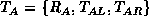 and 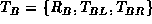. Equivalence of trees is given by
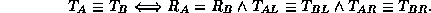
A simple, recursive algorithm suffices to test the equivalence of trees.
Since the BinaryTree class is ultimately
derived from the AbstractObject class
introduced in Program  ,
it must provide a compareTo method to compare binary trees.
Recall that the compareTo method is
invoked by the compare method
when the latter is used to compare two objects,
say obj1 and obj2 like this:
,
it must provide a compareTo method to compare binary trees.
Recall that the compareTo method is
invoked by the compare method
when the latter is used to compare two objects,
say obj1 and obj2 like this:
int result = obj1.compare (obj2);The compareTo method returns a negative number if 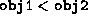; a positive number if 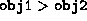; and zero if 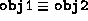.
So what we need is to define a total order relation on binary trees. Fortunately, it is possible to define such a relation for binary trees provided that the objects contained in the nodes of the trees are drawn from a totally ordered set.
Theorem Consider two binary trees 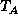 and 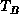 and the relation < given by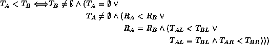
where is either 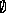 or 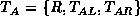 and is 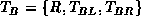. The relation < is a total order.
The proof of Theorem is straightforward albeit tedious.
Essentially we need to show the following:
).
Program gives an implementation of the compareTo
method for the BinaryTree class.
This implementation is based on the total order relation < defined
in Theorem .
The argument of the compareTo method can be any Object instance.
However, normally that object will be another BinaryTree instance.
Therefore, the cast on line 10 is normally successful.
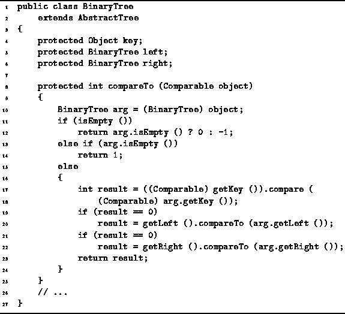
Program: BinaryTree class compareTo method.
The compareTo method compares the two binary trees this and arg. If they are both empty trees, compareTo returns zero. If this is empty and arg is not, compareTo returns -1; and if arg is empty and this is not, it returns 1.
Otherwise, both trees are non-empty.
In this case, compareTo first compares their respective roots.
We assume that the roots implement the Comparable interface
defined in Program
and, therefore, we use the compare method to compare them.
If the roots are equal, then the left subtrees are compared.
Then, if the roots and the left subtrees are equal,
the right subtrees are compared.
Clearly the worst-case running occurs when comparing identical trees.
Suppose there are exactly n nodes in each tree.
Then, the running time of the compareTo method is
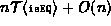,
where  is the time needed to compare the objects contained
in the nodes of the trees.
is the time needed to compare the objects contained
in the nodes of the trees.
 Copyright © 1998 by Bruno R. Preiss, P.Eng. All rights reserved.
Copyright © 1998 by Bruno R. Preiss, P.Eng. All rights reserved.